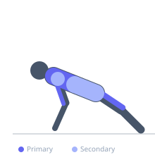
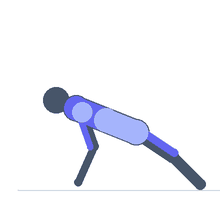

Exercise guide / TRX Atomic Push-Up
TRX Atomic Push-Up
The TRX atomic push-up combines a push-up with a simultaneous knee tuck, performed with both feet in TRX foot cradles. The push-up phase challenges the chest, triceps, and anterior shoulder; the knee tuck phase challenges the hip flexors and anterior core in compression. The TRX suspension element makes both phases harder by creating instability in multiple planes. This is a highly demanding combined push and core exercise.
Primary muscles
pectoralis major sternal
iliacus
triceps long head
Secondary muscles
deltoid anterior
rectus abdominis
Stabilizers
transverse abdominis
trapezius lower
Equipment
No Equipment (Bodyweight)


Starting position
- Place both feet in the TRX foot cradles and assume a push-up plank position with hands on the floor. The TRX straps should be at approximately mid-calf height.
Setup
- Adjust the TRX to a medium height. Begin with the standard TRX push-up and TRX knee tuck separately before combining them.
Steps
- Step 1: Begin in the push-up plank with both feet in the TRX cradles.
- Step 2: Lower the chest to the floor in a controlled push-up.
- Step 3: As you press back up, simultaneously drive both knees toward the chest in a knee tuck.
- Step 4: Extend both legs back to the plank position. That is one repetition.
Coaching cues
- Press up and tuck at the same time — not one then the other
- Squeeze the core hard during the tuck — the knees come to the chest, not toward the hands
- Control the return — do not let the legs swing back to the plank position
Breathing
- Inhale during the push-up descent. Exhale forcefully during the press-up and tuck simultaneously.
Range of motion
- Full push-up range combined with a full knee tuck to chest.
Tempo
- 3s eccentric push-up, then explosive simultaneous press-up and tuck, then 2s controlled extension back to plank.
Common mistakes
- Hips rising during the knee tuck rather than tucking from the core
- Doing the push-up and tuck sequentially rather than simultaneously
- Losing rigid plank on the return — the body must stay straight as the legs extend back
Safety
- This is advanced — master TRX push-up and TRX knee tuck separately before combining
- Wrist discomfort may require push-up handles or reduced range
Training
- strength: 4–10 reps
- strength: 2–3 sets
- Rest: {'strength': 90}